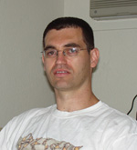

Dr. Dobb's Journal February 2007
Employer: Numenta
Job: Senior Staff Engineer
DDJ: What's Numenta all about?
GS: We develop a platform for intelligent computing and human-level (and beyond) pattern recognition, based on a theory of the neocortex.
DDJ: What do you do there?
GS: I am a senior staff engineer and work on the runtime engine and tools.
DDJ: What do you like about your job?
GS: Everything. It is my dream job. I get to work on a revolutionary domain that is my personal passion—making computers really smart—and can lead to a new programming paradigm. I work with the smartest group of people and use C++ and Python. Our development machine is a Mac, which is also way cool.
DDJ: What do you find challenging about your job?
GS: Producing high-performance and reliable software while keeping it simple for users and extensible for the future. We develop a new kind of technology, so it is important not to make mistakes that might discourage people from trying it or give them the wrong impression.
DDJ: What have you found that makes your job easier?
GS: My coworkers. They are very bright and cooperative. I can always depend on them.
Employer: ActiveGrid
Job: Chief Architect
DDJ: What do you like about your job?
JN: Solving customer problems. Building enterprise-class apps is really hard and Java EE is a disaster from a developer productivity standpoint. Moreover, enterprises need to bring a whole host of Web 2.0 functionality to their internal and external customer bases. None of the current set of development infrastructure helps with that. The good news is that we can solve these problems! Being able to bring demonstrable relief to our customer's pain points is something I find very rewarding.
DDJ: What do you find challenging about your job?
JN: There are always 142 problems to solve. We have a 12-week development cycle and a small team of developers. We can address maybe three problems per release. The challenge is to choose the right three problems. If you only produce a list of point features, you fail. You need a set that enables a whole new level of productivity—a paradigm shift of some sort.
DDJ: What have you found that makes your job easier?
JN: In preparation for any difficult situation or challenging activity, asking the question: "What do I need to focus on in this situation to achieve success?" In a previous job, I remember vividly the day the CEO called the whole company together and wrote one word on the board in huge bold letters, "FOCUS." There was lots to do, lots to distract us. His guidance proved key. Our focus determined our success.
Employer: Hewlett-Packard Global Delivery India Center, Bangalore (Bengaluru), India
Job: Senior Technology Consultant
DDJ: What do you do at HP-GDIC, exactly?
SN: I work in a group where we build solutions and proof of concepts around the Microsoft technologies that customers will be embracing in the next one or two years. I identify technologies that have high potential and are aligned with HP's roadmap; plan solutions around those technologies; and architect, design, and build those solutions.
DDJ: What do you like about your job?
SN: I like the uniqueness and inventiveness of the solutions we create the most. We work only on new and emerging technologies. We have to think out-of-the-box.
DDJ: What do you find challenging about your job?
SN: Convincing the customer about the new technologies because there are hardly any existing solutions to showcase as reference. And as we work on new technologies, we generally deal with products in their beta stages when you won't find much documentation. Sometimes, there could be drastic changes from one beta version to the other—and it's fun finding all the changes and fixing them without any "What's New" document.
DDJ: What have you found that makes your job easier?
SN: I use applications such as Outlook, OneNote, and Excel extensively, in sync with my iPAQ, for personal productivity and to plan and manage my time. I constantly track and monitor where and how I'm spending my time and find ways to improve on that. It becomes very handy when you are handling multiple activities at the same time.